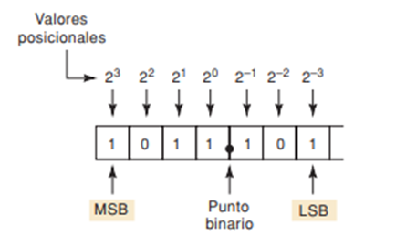
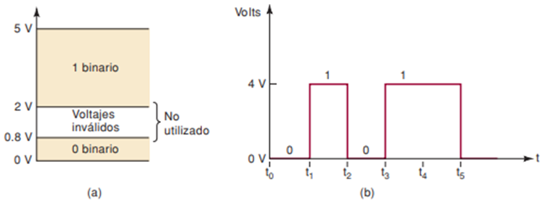
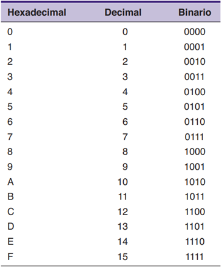

La creación de una página web específica para enseñar la conversión de sistemas numéricos en la asignatura de sistemas digitales para estudiantes de primer semestre de la carrera de Tecnologías de la Información (TI) en la Universidad Nacional de Chimborazo se enmarca en un contexto educativo que busca aprovechar las tecnologías digitales para mejorar el aprendizaje interactivo y accesible. Esta iniciativa tiene como objetivo proporcionar a los estudiantes una herramienta interactiva que les permita comprender y practicar conceptos relacionados con la conversión entre sistemas binarios, octales y hexadecimales.
| Aspecto | Página Web | Juegos Interactivos | Aplicativos Móviles |
|---|---|---|---|
| Propósito Principal | Presentar información, servicios y contenido | Entretenimiento, educación, simulación | Funcionalidad específica, servicios, entretenimiento |
| Tecnologías Usadas | HTML, CSS, JavaScript, PHP, ASP, SQL | Unity, Unreal Engine, HTML5, JavaScript, C++ | Swift, Kotlin, Java, Flutter, React Native, SwiftUI |
| Interactividad | Baja a media, principalmente a través de formularios y enlaces | Alta, incluye control en tiempo real, gráficos avanzados | Media a alta, depende del tipo de aplicación |
| Accesibilidad | Alta, accesible desde cualquier navegador web | Media, requiere dispositivos con capacidad gráfica adecuada | Media a alta, dependiendo de la compatibilidad de dispositivos |
| Actualización | Fácil de actualizar y mantener en tiempo real | Requiere parches y actualizaciones de software | Depende del sistema de distribución (App Store, Google Play) |
| Desempeño | Depende de la complejidad del contenido y la eficiencia del código | Alta demanda de recursos, necesita hardware potente | Varía según la aplicación y el dispositivo |
| Desarrollo | Relativamente sencillo y rápido | Complejo, requiere habilidades avanzadas en programación y diseño gráfico | Varía desde sencillo a complejo según la funcionalidad |
| Costo de Desarrollo | Generalmente bajo a moderado | Alto, debido a la complejidad y recursos necesarios | Varía, puede ser bajo a alto según la aplicación |
| Plataforma | Navegadores web en computadoras y dispositivos móviles | Consolas, PCs, dispositivos móviles | Dispositivos móviles (iOS, Android) |
| Tiempo de Desarrollo | Corto a moderado | Largo, debido a la complejidad y pruebas intensivas | Corto a largo, dependiendo de la aplicación |
| Experiencia de Usuario | Basada en la navegación y la interacción con contenido estático y dinámico | Inmersiva, interactiva y a menudo adictiva | Dependiente del diseño de la interfaz y la funcionalidad |
| Alcance | Amplio, accesible desde cualquier dispositivo con conexión a internet | Limitado por el tipo de dispositivo y hardware | Depende de la plataforma y la distribución en tiendas de aplicaciones |
El uso de HTML para el diseño de una página web destinada a la conversión de sistemas numéricos en la asignatura de sistemas digitales para estudiantes de primer semestre de la carrera de TI de la Universidad Nacional de Chimborazo es altamente justificado debido a su capacidad para estructurar y presentar contenido de manera clara y accesible...
La programación de una página Web normal se realiza mediante lenguajes de programación estándar como HTML5 y XHTML y puede incluir funciones especiales desarrolladas en otros lenguajes de programación tales como JavaScript, PHP, ASP, etc.
| Lenguaje | Tipo | Uso Principal | Ejemplo de Sintaxis |
|---|---|---|---|
| HTML | Marcado | Estructura básica de una página web | <p>Este es un párrafo.</p> |
| JavaScript | Script del lado del cliente | Interactividad y efectos en tiempo real | console.log('¡Hola mundo!'); |
| PHP | Script del lado del servidor | Generación de contenido dinámico | <?php echo 'Hola mundo'; ?> |
| ASP | Script del lado del servidor | Desarrollo web con tecnología Microsoft | <% Response.Write("Hola mundo"); %> |
| Técnica | Descripción | Beneficios |
|---|---|---|
| Uso de Recursos Multimedia | Incorporación de videos, audios, infografías y animaciones para explicar conceptos. | Mejora la comprensión y retención de información al involucrar múltiples sentidos. |
| Gamificación | Aplicación de elementos de juego como puntos, badges y niveles en el proceso de aprendizaje. | Aumenta la motivación y el compromiso del estudiante haciendo el aprendizaje más divertido. |
| Aprendizaje Activo | Métodos como debates en línea, proyectos grupales y resolución de problemas. | Fomenta el pensamiento crítico, la colaboración y la aplicación práctica de conocimientos. |
| Microaprendizaje | Dividir el contenido en segmentos pequeños y manejables como módulos o lecciones breves. | Facilita la asimilación de información y reduce la sobrecarga cognitiva. |
| Feedback Inmediato | Proporcionar retroalimentación instantánea a través de quizzes en línea y ejercicios interactivos. | Ayuda a los estudiantes a corregir errores y entender los conceptos más rápidamente. |
| Aprendizaje Adaptativo | Utilización de tecnología para personalizar el contenido y el ritmo de aprendizaje según el progreso del estudiante. | Ofrece una experiencia de aprendizaje más personalizada y efectiva. |
| Comunicación Sincrónica y Asincrónica | Uso de herramientas de videoconferencia, foros de discusión y mensajería instantánea. | Facilita la interacción en tiempo real y diferido permitiendo flexibilidad en la comunicación. |
| Evaluaciones Formativas | Implementación de evaluaciones continuas para monitorear el progreso del estudiante. | Identifica áreas de mejora y proporciona oportunidades para el refuerzo continuo del aprendizaje. |
| Uso de Plataformas LMS (Learning Management Systems) | Sistemas como Moodle, Blackboard o Canvas para organizar y gestionar el contenido educativo. | Centraliza recursos, seguimiento del progreso y facilita la administración del curso. |
| Aprendizaje Basado en Proyectos | Asignación de proyectos prácticos que requieren aplicar lo aprendido a situaciones del mundo real. | Desarrolla habilidades prácticas y de resolución de problemas. |
En la era digital actual, existen diversos recursos en línea y métodos diseñados para facilitar el aprendizaje y la práctica de la conversión entre sistemas numéricos como el binario, decimal y hexadecimal...
| Tipo de Recurso | Descripción | Ejemplo | Ventajas |
|---|---|---|---|
| Simuladores Interactivos | Permiten a los usuarios ingresar valores en un sistema numérico y ver el proceso de conversión a otros sistemas en tiempo real. | Simulador de conversión de números de Desmos | Retroalimentación inmediata, explicaciones paso a paso, experiencia interactiva que facilita la comprensión. |
| Tutoriales Multimedia | Combinan videos, presentaciones y ejercicios interactivos, permitiendo a los estudiantes aprender a su propio ritmo. | Khan Academy, Coursera | Aprendizaje a propio ritmo, revisión repetida de conceptos, combinación de diferentes tipos de contenido. |
| Aplicaciones Web | Permiten convertir números entre sistemas binario, decimal y hexadecimal, accesibles desde cualquier dispositivo con conexión a Internet. | Number System Converter | Accesibilidad desde cualquier dispositivo, conveniencia para el aprendizaje en cualquier lugar y momento. |
En el ámbito de los sistemas digitales, la conversión entre diferentes sistemas de numeración es una habilidad fundamental...
Un número binario puede ser representado por cualquier secuencia de bits (dígitos binarios) que suelen representar cualquier mecanismo capaz de usar dos estados mutuamente excluyentes. El sistema binario de numeración se ha convertido en un elemento básico para la tecnología moderna...

Es un sistema de numeración posicional en el que las cantidades son representadas mediante la base aritmética del número diez...

El sistema numérico hexadecimal utiliza la base 16. En consecuencia, tiene 16 símbolos posibles para los dígitos. Utiliza los dígitos del 0 al 9 más las letras A, B, C, D, E y F como símbolos para los 16 dígitos...

La conversión de un número binario a decimal implica expresar el número binario como una suma de potencias de 2...
Para convertir un número hexadecimal a decimal se multiplica cada dígito hexadecimal por 16 elevado a su posición correspondiente y se suman estos productos...
En el diseño de recursos educativos en línea para la conversión de sistemas numéricos es fundamental comprender las fortalezas, debilidades y características de los diferentes métodos y herramientas disponibles...
| Fortalezas | Debilidades | Características |
|---|---|---|
| Accesibilidad desde cualquier lugar con conexión a Internet | Dependencia de una conexión a Internet estable | Interactividad mediante simulaciones y ejercicios prácticos |
| Aprendizaje autodirigido y a ritmo individual | Posible distracción o falta de motivación | Contenido multimedia (videos, presentaciones, animaciones) |
| Retroalimentación inmediata y personalizada | Falta de interacción presencial con instructores | Generadores de ejercicios aleatorios |
| Disponibilidad las 24 horas del día | Dificultad para hacer preguntas en tiempo real | Calculadoras de conversión integradas |
| Variedad de recursos (simuladores, tutoriales, aplicaciones web) | Posibles problemas técnicos o de compatibilidad | Foros de discusión y herramientas de colaboración |
| Actualización constante del contenido y recursos | Costo potencial de desarrollo y mantenimiento | Organización del contenido en secciones temáticas |
| Adaptabilidad a diferentes estilos de aprendizaje | Necesidad de habilidades tecnológicas por parte de los usuarios | Cumplimiento de estándares de accesibilidad web |
| Acceso a recursos adicionales y materiales complementarios | Posible falta de supervisión o guía adecuada | Barra lateral con herramientas de ayuda y recursos adicionales |
La conversión entre sistemas numéricos es una actividad crucial en el ámbito de los sistemas digitales debido a su impacto directo en el diseño y funcionamiento de circuitos y dispositivos electrónicos.
Los simuladores interactivos permiten a los usuarios ingresar valores numéricos en un sistema determinado y visualizar paso a paso el proceso de conversión a otros sistemas.
La interfaz de usuario y la experiencia de usuario son fundamentales en el desarrollo efectivo de recursos educativos en línea como el sitio web propuesto para la conversión de sistemas numéricos.
Para más información, consulta el siguiente enlace.